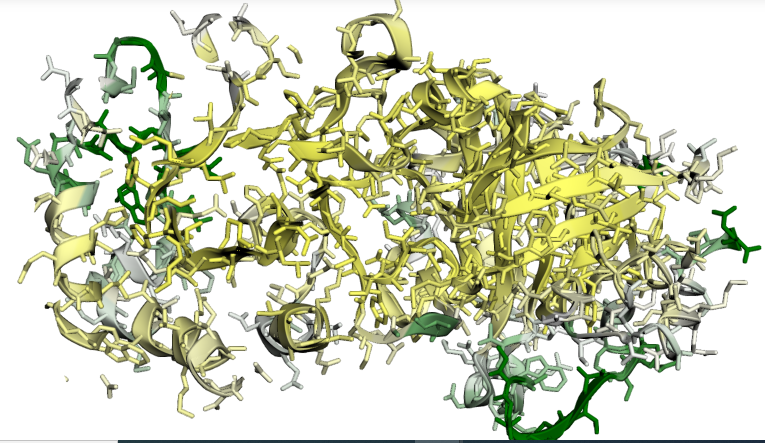
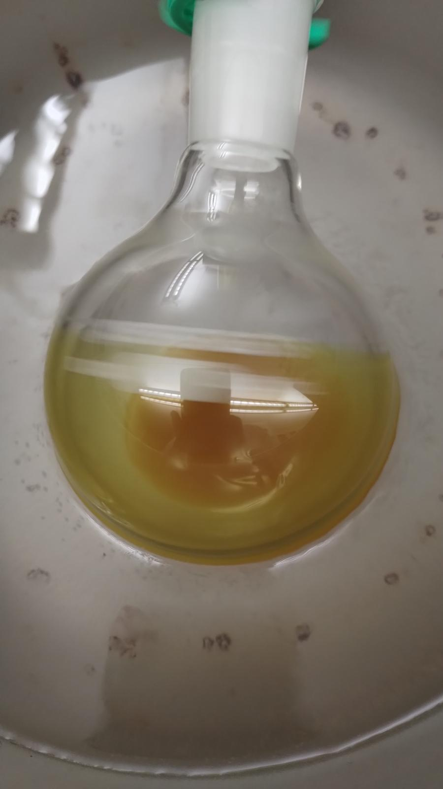
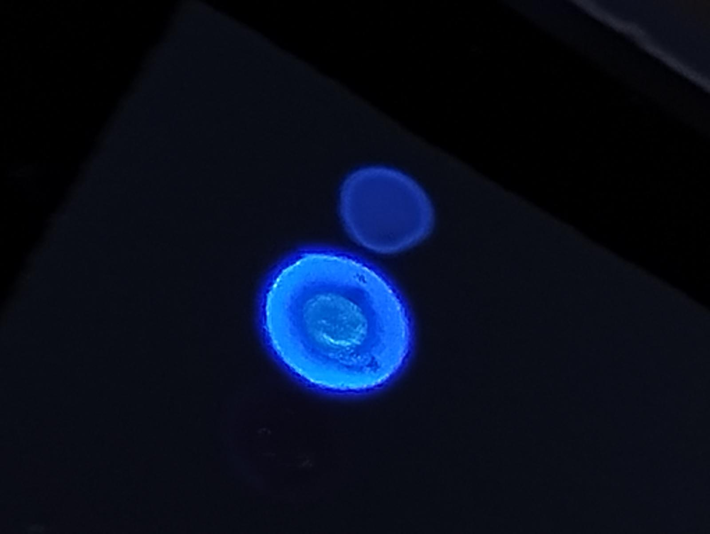
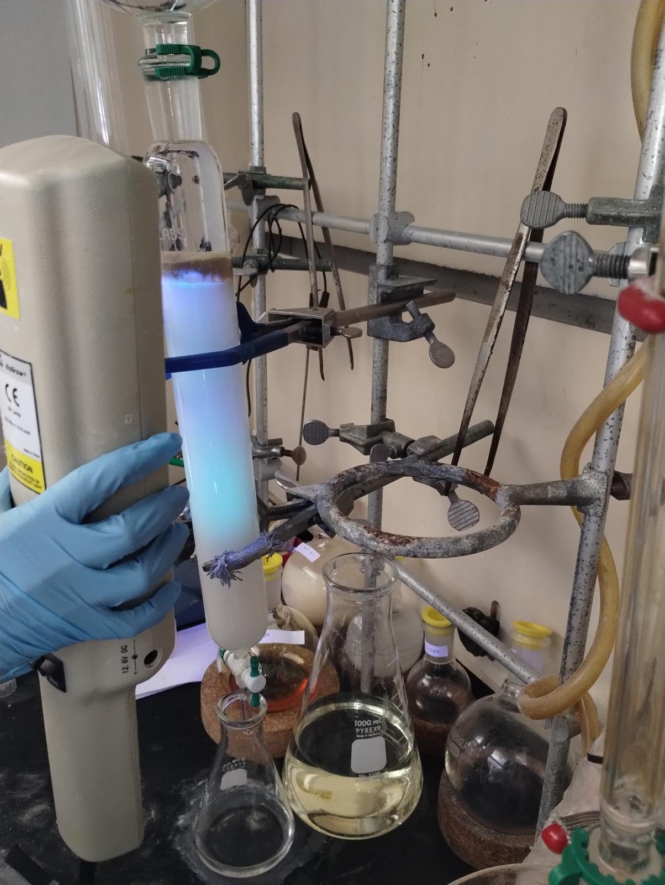
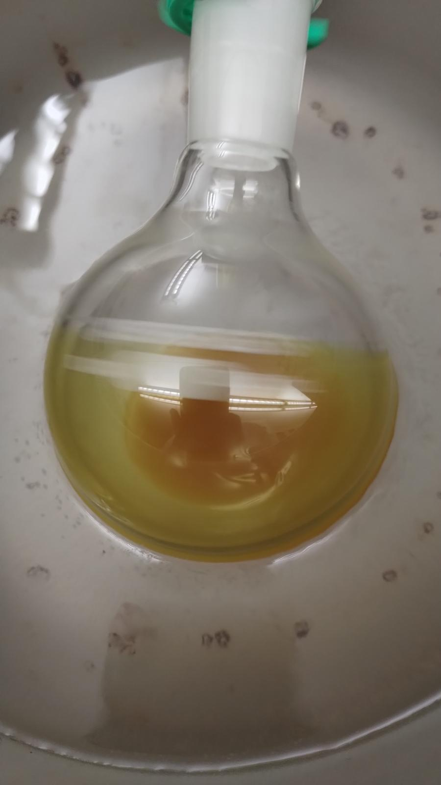
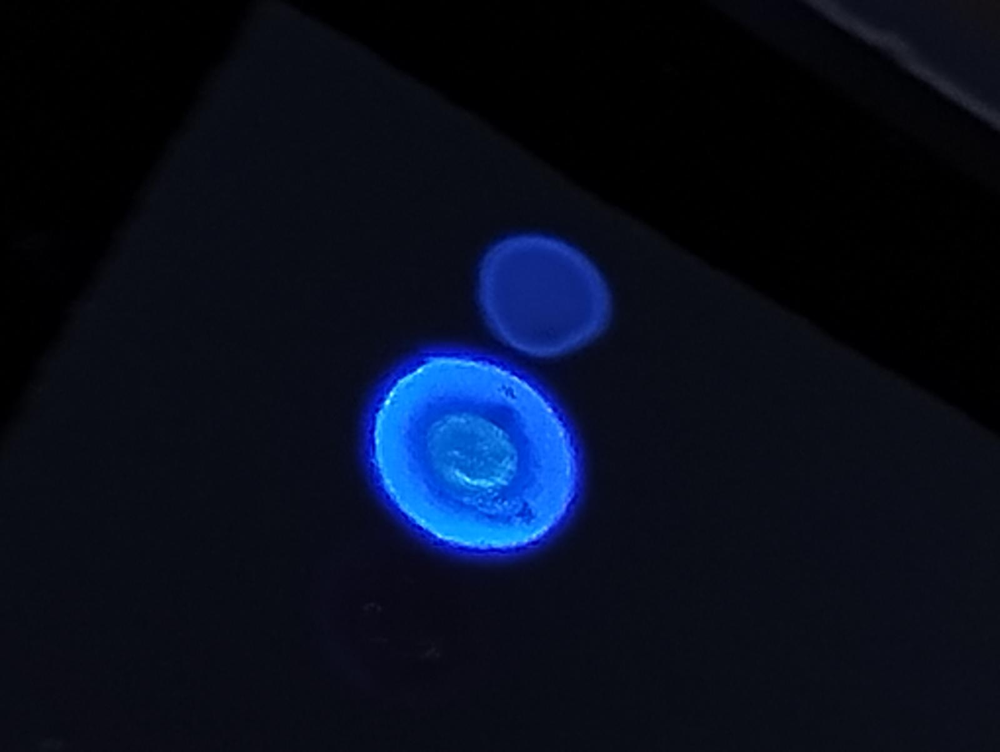
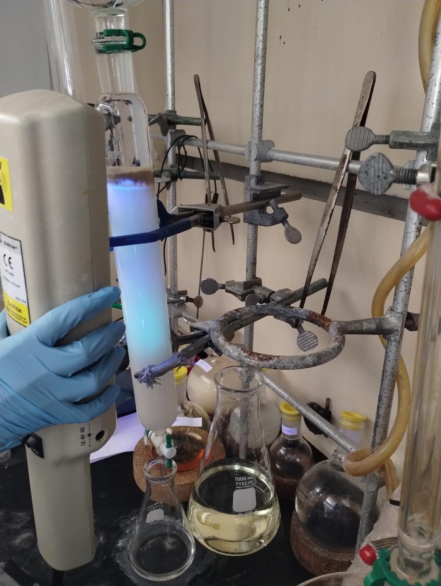

Pratham Lotia
Graduate Researcher at Department of Computational & Systems Biology, University of Pittsburgh
Koes Group :
At the Koes Group, since fall 2024 I am conducting molecular dynamics simulations of wild-type Triose Phosphate Isomerase (TPI) using AMBER. TPI plays a crucial role in the interconversion of dihydroxyacetone phosphate and D-glyceraldehyde-3-phosphate. The E104D mutation in TPI, while preserving enzymatic activity, compromises the enzyme's thermal stability, leading to increased degradation and a significant reduction in catalytic efficiency.
Skills: Molecular Dynamics, Amber, Python, bash, ssh, MDAnalysis, py3dmol, VMD
Niepa μ biointerface Lab :
Before joining the Koes Group, I worked throughout the summer at the Niepa Microbiointerface Lab, where I focused on testing the rheological properties of microbes. My research centered on biofilms formed by ESKAPEE pathogens such as E. coli, P. aeruginosa, and S. aureus.
Skills: Rheometry, Tensiometry, Bench-Top Spectrophotometer, Cell Culture
The Ly Lab :
 





The Danith Ly Lab at Carnegie Mellon University is known for its innovative research in chemical biology, particularly in the synthesis of nucleic acid-based molecules like peptide nucleic acids (PNAs). The lab’s work spans gene editing, molecular diagnostics, and the development of novel therapeutics, combining chemistry and biology to address critical challenges in medicine.
Skills: Organic Chemistry, Organic Synthesis, Column Chromatography, Flash Chromatography